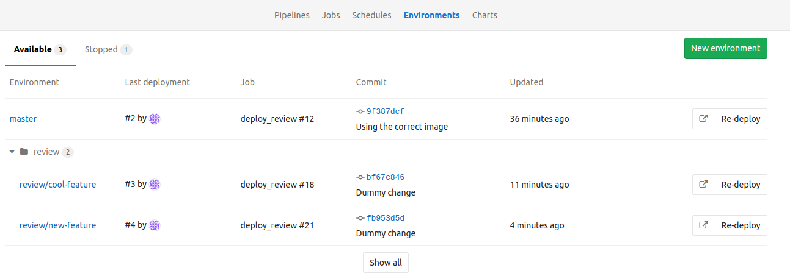

Gitlab take two - Dynamic Environments
2017-07-25
In part one I found Gitlab to be not too pushy about its suite approach, and its CI to work as advertised. In part two Gitlab takes my appreciation to the next level. I say just one word: environments.
Rewinding a few weeks back, I rediscovered a concept so dear to me: review apps. Review apps are on-demand, throw away test environments. With properties that
- encourage decoupling feature releases
- enabling automated integration tests
- reducing the mayhem on release day
- eliminating the code cut-off completely
I made this video back then to demonstrate the feature on Github - as you can see I was not giving in to Gitlab just yet.
It takes one URL
What happened in the video behind the scenes is
- A CircleCI job was triggered on commit
- That job built the code and pushed the Docker image to the registry
- CircleCI called a custom webhook I built to do the auto deploy to a dynamic environment
- In that little Python endpoint I called the Rancher container orchestration system to deploy a new instance of the app with the freshly built image
- Once it was deplyoed I used Github’s Status API to report back the environment’s URL
While it was not a big task, it did take time to piece it together, and using the Status API for dynamic environments does not have the best UX in my opinion.
No surprise I was pumped to see the native support of Environments in Gitlab. Little did I know about the elegance of how Gitlab added the Environments feature.
In essence they did what I did with Github: they built in a place where the URL of the dynamic environment can be stored, plus featured the name value pairs (environment - access URL) in the right places on the UI. Allowing full flexibility with environments, nothing really prescribed about the deployment method, no app server built in or similar.
How to dynamic environment?
The bellow .gitlab-ci.yml may look familiar from part one.
The additions I made to achieve the dynamic environments is the deploy_review stage.
The deploy_review stage as its name suggests deploys the images that were built in the build stage. Doing that with a simple curl to the Rancher container orchestration platform, with the stack definition in the payload.
While the payload may seem criptic first sight, it is essentially passing a docker-compose definition to Rancher, with a few deployment specific meta information in the rancher-compose field.
Besides defining the deployment step, the deploy_review stage contains a section about the environment itself: the key-value pair to define the environment name and its URL.
environment:
name: review/$CI_COMMIT_REF_NAME
url: http://$CI_COMMIT_REF_NAME.laszlo.cloud
And that’s it. We use a special Gitlab variable to name the environment as review/<<branchname>>, and Gitlab will show the environment on the UI. No need to predefine the environment in Gitlab. They are trully dynamic.
Environments on the Gitlab UI
This feature is only brilliant, because of how Gitlab integrates Environments to the UI. Environments prefixed with the same <<prefix>>/ are collapsable in the UI.

The environment link is shown both on the Environments screen (above) and on the PR details page as shown bellow.

Plus one can view the deployment history of an environment, redeploy or roll back if needed.

More on environments in the Gitlab documentation.
Host based routing
While the .gitlab-ci.yml supports variables, there is a limitation that prevented me from doing the bare minimum for the dynamic environments - just launching a new environment on its own port; I had to set up proper host based routing for the environments in Rancher.
It’s not the end of the world as instead of URLs like http://laszlo.cloud:xxxx I have now easy to remember URLs like
http://<<branchname>>.laszlo.cloud
It looks pretty cool.
For that, I used Traefik, a modern reverse proxy where all my Rancher services automatically register. All I had to do is to deploy Traefik from the Rancher service catalog and set a few labels as described here.
Closing thoughts
It took some time until I found Gitlab’s Dynamic Environments.
I started the pursuit last fall in Mastering test environments with Docker where I rolled with my own command line based solution. Then revistied the topic a month ago and hacked it together for Github. But I think I found the ultimate solution on how to bring together the Pull Requests and the matching Dynamic Environment under one UI.
As for Gitlab, I’m sold. The simplicity of the Environments feature amaze me. Actually I’m thinking it’s not too difficult for Github to follow the lead, nor anyone who wants to extend Github with a browser extension, Refined Github style.
The Github suite did not enforce anything on me, I like that. This might change of course. They certainly want to make it easy for developers, and that may reach magic levels.
For example with their autodeploy effort where they want to infer the deployment method from the source code. In my experience it’s only an illusion until reality kicks in. Things are complex, hiding that for too long is not the right answer. Anyways, let’s wait with the verdict on that one.
Onwards!
Are you running Kubernetes?
You can bootstrap logging, metrics and ingress with my new project, Gimlet Stack. Head over to gimlet.io and see if it helps you.